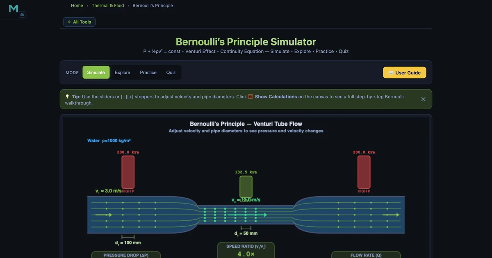

Bernoulli's Principle Simulator — Fluid Speed & Pressure
Bernoulli's principle is the single equation that explains how aircraft wings generate lift, why a garden hose speeds up when you cover part of the nozzle, and how a Venturi meter measures flow rate. This guide takes you from the derivation to worked calculations, then lets you explore every scenario live in the Bernoulli's Principle Simulator.

- Bernoulli's principle states that along a streamline in an ideal, steady, incompressible fluid the sum of static pressure, dynamic pressure (½ρv²), and hydrostatic pressure (ρgh) stays constant — so faster flow means lower static pressure.
- At equal elevation the pressure drop through a constriction is ΔP = ½ρ(v₂² − v₁²); for water speeding from 3 m/s to 12 m/s this gives 67.5 kPa.
- Velocities come from continuity (A₁v₁ = A₂v₂), so halving the pipe diameter quadruples the velocity, and the equation is most accurate for turbulent flow (Re > 4000) where viscous losses are small.
What Is Bernoulli's Principle?
Published by Daniel Bernoulli in 1738, the principle is a statement of energy conservation for flowing fluids. For an ideal fluid — incompressible, inviscid, and in steady flow — the total mechanical energy per unit volume is constant along any streamline. That total energy has three parts:
- Static pressure P — the "pushing" pressure acting on the fluid.
- Dynamic pressure ½ρv² — kinetic energy per unit volume.
- Hydrostatic pressure ρgh — potential energy per unit volume.
When any one of these increases, the others must decrease to keep the sum constant. The most dramatic consequence: faster flow means lower static pressure.
The Bernoulli Equation
The full Bernoulli equation, valid along a streamline between any two points (1 and 2) in an ideal fluid:
At the same elevation (h₁ = h₂), this simplifies to:
Rearranging for the pressure at point 2:
The assumptions — ideal, steady, incompressible — hold well for water in short pipework and for air at low Mach number (<0.3). Real fluids introduce viscous losses that are handled by the Darcy–Weisbach equation, but Bernoulli remains an excellent first approximation.
The Continuity Equation
Before applying Bernoulli you need to know the velocity at each point. The continuity equation (conservation of mass for an incompressible fluid) states:
where Q is the volumetric flow rate (m³/s) and A is the cross-sectional area. For a circular pipe of diameter d, A = πd²/4. The velocity ratio equals the inverse of the area ratio:
This is why a partially blocked garden hose nozzle produces a faster jet — the same flow rate must pass through a smaller area.
Worked Example: Venturi Pressure Drop
The simulator's default state uses water (ρ = 1000 kg/m³) at v₁ = 3 m/s through a 100 mm diameter pipe narrowing to 50 mm at the throat (Δh = 0):
-
Continuity — throat velocity:
v₂ = v₁ × (d₁/d₂)² = 3 × (100/50)² = 3 × 4 = 12 m/s -
Dynamic pressures:
q₁ = ½ × 1000 × 3² = 4 500 Pa
q₂ = ½ × 1000 × 12² = 72 000 Pa -
Throat static pressure (P₁ = 200 kPa baseline):
P₂ = 200 000 + 4 500 − 72 000 = 132 500 Pa = 132.5 kPa - Pressure drop: ΔP = 200 − 132.5 = 67.5 kPa
- Flow rate: Q = A₁ × v₁ = π(0.05)² × 3 = 0.02356 m³/s = 23.6 L/s
All five results are visible simultaneously in the simulator's readout panel — velocity, pressures, flow rate, and Reynolds number.
Dynamic Pressure and the Pitot Tube
Dynamic pressure is the kinetic energy per unit volume of the flowing fluid:
A Pitot tube works by bringing the flow to rest at a stagnation point. All kinetic energy converts to pressure, giving the total (stagnation) pressure Pt = Ps + q. Measuring the difference between total and static pressure yields the flow velocity:
Aircraft airspeed indicators and industrial flow probes both use this principle. In the simulator, try the Pitot tube concept card to see a numerical example.
Real-World Applications of Bernoulli's Principle
Bernoulli's equation appears in a surprising range of engineering systems:
- Airplane lift — The lift force on a wing is L = ½ρv²·S·CL. At cruise speed (v = 250 m/s), even a modest CL on a large wing area generates hundreds of kilonewtons of upward force.
- Venturi meters — Flow rate in industrial pipework is measured by deliberately narrowing the pipe and reading the pressure drop with a manometer.
- Carburettors and atomisers — Fast air over a liquid tube creates low pressure that draws liquid up and breaks it into droplets — the basis of perfume sprayers and old-fashioned petrol carburettors.
- Siphons — A continuous column of liquid can flow upward over a barrier if the downstream pressure is low enough to "pull" the liquid.
Reynolds Number and Flow Regime
Before applying Bernoulli it is worth checking whether the flow is laminar or turbulent, since viscous losses matter more in laminar flow. Reynolds number is:
For our worked example: Re₁ = 1000 × 3 × 0.1 / 0.001 = 300 000 (strongly turbulent). At the throat: Re₂ = 1000 × 12 × 0.05 / 0.001 = 600 000. Both are well into the turbulent regime (Re > 4000), so Bernoulli applies with good accuracy. The simulator displays Re for both sections and labels the regime automatically.
Using the Simulator
Open the Bernoulli's Principle Simulator and try these experiments:
- Fluid type: Switch from Water to Oil (ρ = 850) or Air (ρ = 1.225). Notice how lower density fluids produce lower dynamic and static pressure differences even at the same velocity.
- Diameter ratio: Reduce d₂ progressively from 50 mm down. Watch P₂ fall rapidly — for very narrow throats it can approach zero (cavitation threshold).
- Height offset Δh: Raise the throat above the inlet. The hydrostatic term ρgΔh adds to the pressure drop. For water rising 1 m: extra ΔP = 1000 × 9.81 × 1 = 9810 Pa ≈ 9.8 kPa.
- Step-by-step calculator: Click the "Show Calculation" button on the canvas to see a detailed derivation for your current state.
- Explore and Practice modes: Work through the concept cards and 12 randomised problems — Venturi, Pitot tube, flow rate, Reynolds number.
Key Takeaways
- Bernoulli's equation \(P + \tfrac{1}{2}\rho v^2 + \rho gh = \text{const}\) conserves energy along a streamline.
- The continuity equation \(A_1v_1 = A_2v_2\) links velocity to pipe area — halving diameter quadruples velocity.
- Dynamic pressure \(q = \tfrac{1}{2}\rho v^2\) scales with v². Doubling speed quadruples q.
- The Venturi pressure drop \(\Delta P = \tfrac{1}{2}\rho(v_2^2 - v_1^2)\) is how flow meters work.
- Reynolds number Re = ρvD/μ determines whether Bernoulli's equation applies accurately.
- Lift, Pitot tubes, carburettors, and atomisers all exploit the same speed–pressure trade-off.
Frequently Asked Questions
What does Bernoulli's principle state?
For an ideal fluid in steady flow, P + ½ρv² + ρgh is constant along a streamline. Increasing speed decreases static pressure, and vice versa.
What is the Venturi effect?
When a fluid accelerates through a constriction (smaller area), its static pressure drops. This is described by combining the continuity equation with Bernoulli's equation.
How do you calculate the pressure drop in a pipe?
At the same height: ΔP = ½ρ(v₂² − v₁²). For water at v₁=3, v₂=12 m/s: ΔP = 500×(144−9) = 67 500 Pa = 67.5 kPa.
What is Reynolds number and why does it matter?
Re = ρvD/μ. Below ~2300 flow is laminar; above ~4000 it is turbulent. Bernoulli's equation is most accurate in turbulent, low-viscosity flows where viscous losses are small relative to dynamic pressure.
How does an aircraft wing generate lift?
Air moves faster over the curved upper surface, creating lower pressure there. The net upward force is L = ½ρv²·S·C_L, where S is wing area and C_L is the lift coefficient determined by aerofoil shape and angle of attack.